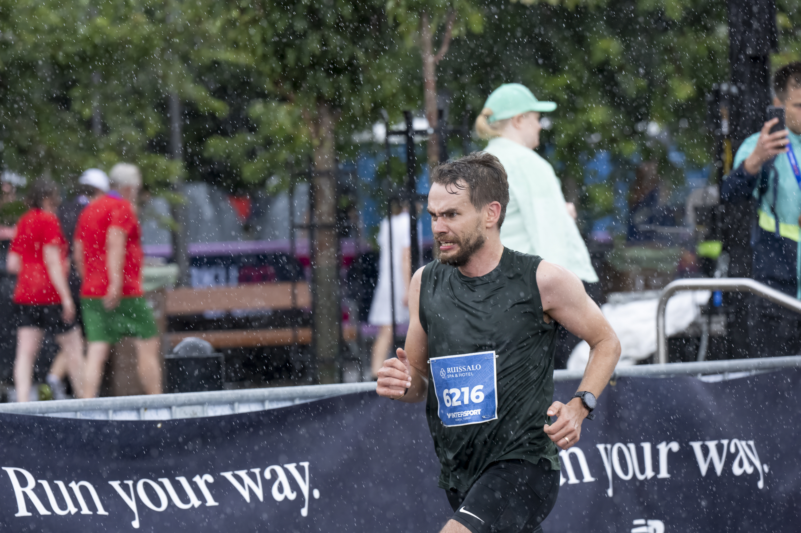
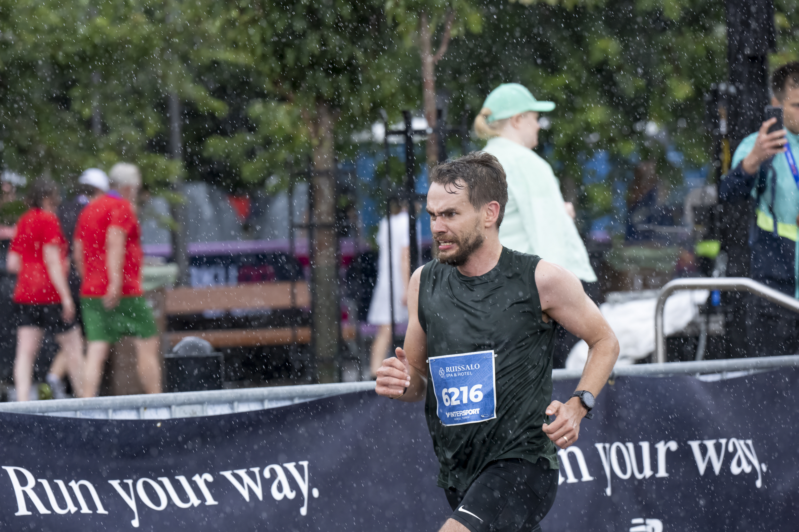

Paavo Nurmi Marathon Experiences
I participated in the Paavo Nurmi Marathon and it was an unforgettable experience. The atmosphere, the crowd, and the route were amazing!
Sharing my runs, marathons and training experiences
This is my new running blog posting details about my runs and experiences.
Running has been an essential part of my life. Here I will share how it all started, my training, and the milestones along the way.

I participated in the Paavo Nurmi Marathon and it was an unforgettable experience. The atmosphere, the crowd, and the route were amazing!
